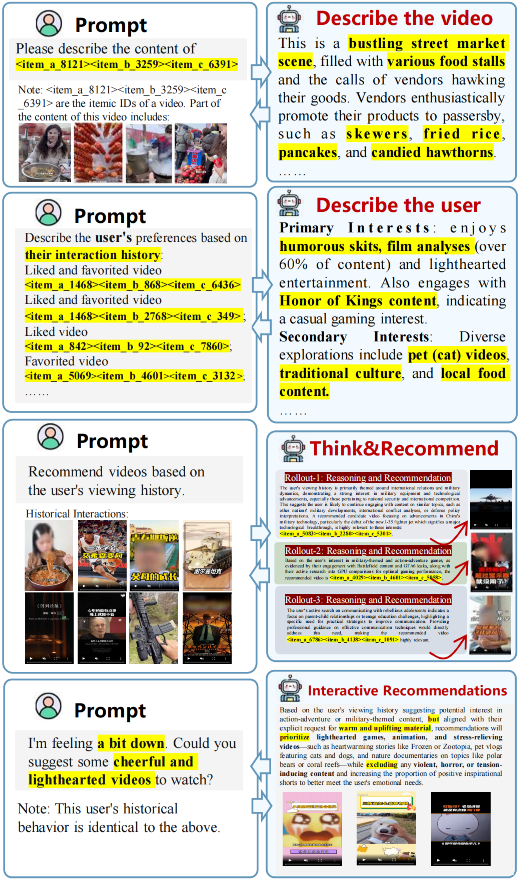
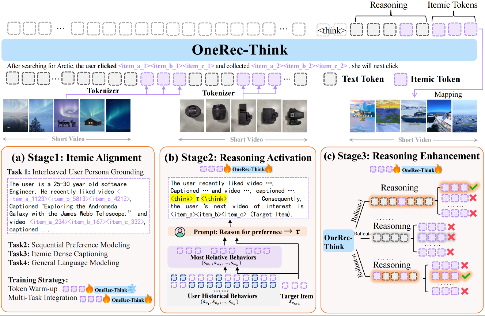
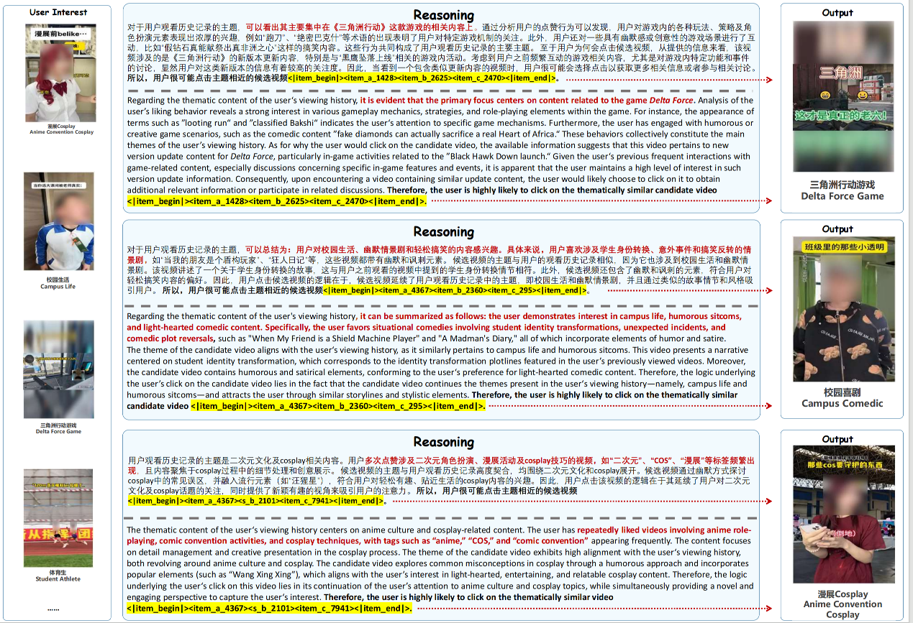
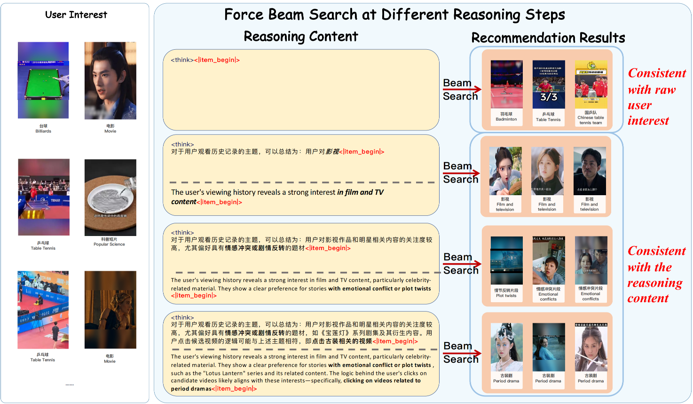
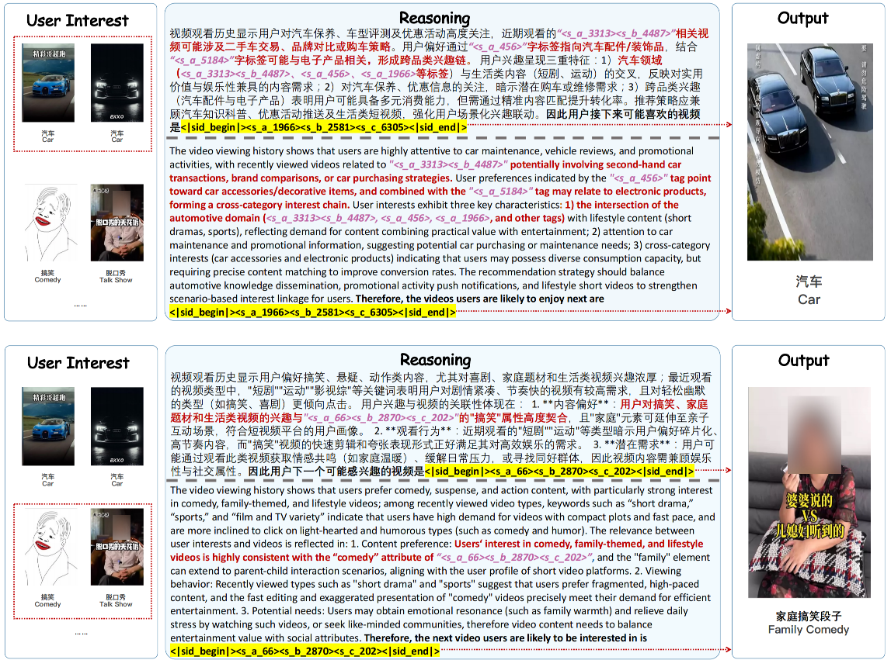
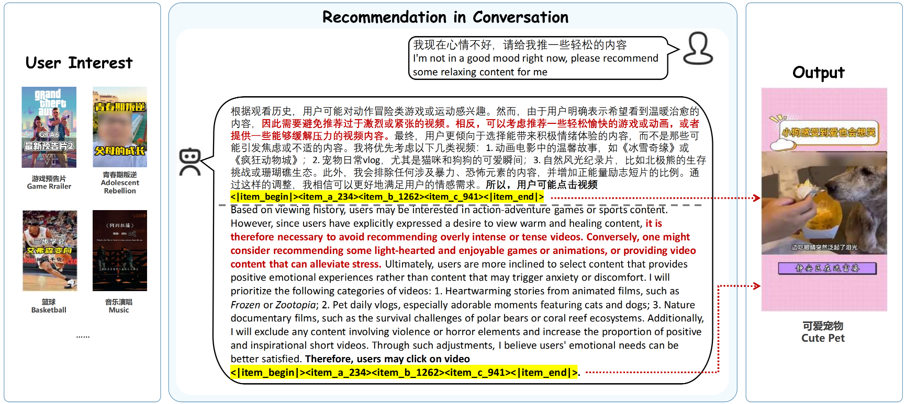

8.2. OneRec-Think的思考框架¶
当PLUM在YouTube上成功验证了协同语义与语言语义可以在工业规模下统一时,推荐系统与LLM的融合似乎已经水到渠成。然而,一个关键问题浮现出来:这些模型虽然能够高效生成推荐结果,但它们的推理过程仍然是隐式的黑箱。当模型推荐一个视频时,我们无法知道它是基于用户的哪些历史行为做出判断,也不清楚它如何权衡内容相似性与协同过滤信号。更重要的是,这些模型无法像ChatGPT那样通过Chain-of-Thought进行显式推理，而后者正是大语言模型在复杂任务上取得突破的核心能力。
OneRec-Think (Liu et al., 2025) 的提出正是为了填补这一空白。它不满足于让LLM仅仅“认识”推荐物品,而是要让LLM学会先思考再推荐。想象一个场景:用户在短视频平台上连续观看了几个军事装备解说视频,此时系统需要推荐下一个内容。传统模型会直接输出一个物品ID,而OneRec-Think则会先生成这样的推理过程:
用户的观看历史主要围绕国际关系和军事动态展开,
表现出对军事装备和技术进步的强烈兴趣,
特别是涉及国家安全和国际竞争的内容。
这表明用户可能会继续关注类似主题,
如其他国家的军事发展、国际冲突分析或防务政策解读。
因此推荐聚焦中国军事技术进步的视频,
特别是新型J-35战斗机首次亮相的内容...
这种显式推理不仅提升了推荐的可解释性,更重要的是,推理过程本身为推荐决策提供了结构化的思考路径,使模型能够更准确地捕捉用户意图的多个层次。
OneRec-Think的核心创新在于将对话、推理与推荐统一在同一个框架中,构建了一个真正“会思考”的推荐系统。不同于传统推荐模型的黑箱决策,OneRec-Think具备三项关键能力:
自然语言交互: 模型能够与用户进行自然对话,理解用户的即时需求和约束条件。例如,当用户说“我最近压力很大,想看些轻松的内容”时,模型能够理解这一情感信号,在推理过程中主动调整推荐策略。
显式推理生成: 模型会先生成结构化的推理路径,详细阐述“为什么推荐这些内容”：分析用户的兴趣特征、匹配候选内容的主题、评估推荐的合理性,而不是直接输出推荐结果。
端到端推荐: 基于推理路径,模型直接生成推荐物品的语义ID,无需依赖预定义的候选集,实现了从理解到推理再到推荐的完整闭环。
{kind=link}

图8.2.1 OneRec-Think统一对话、推理与推荐框架¶
上图展示了OneRec-Think的典型交互场景。用户通过对话表达需求,模型基于用户历史和对话上下文生成结构化的推理分析,最后输出符合用户需求的推荐结果。整个过程完全透明,推理路径可被审查和理解,从而增强了推荐的可信度和可控性。这种能力让推荐系统从被动响应变为主动理解,从静态匹配变为动态适应。
那么,OneRec-Think是如何实现这些能力的呢?答案在于其精心设计的三阶段训练框架:物品对齐(Itemic Alignment)、推理激活(Reasoning Activation)、推理增强(Reasoning Enhancement)。如下图所示,第一阶段通过多任务预训练实现物品级语义对齐,让LLM“认识”推荐系统中的每个物品;第二阶段通过推理脚手架激活LLM的显式推理能力,让模型学会“思考”;第三阶段基于推荐特定的奖励函数通过强化学习精炼推理路径,让模型的思考更加准确和多样。
{kind=link}

图8.2.2 OneRec-Think整体框架:物品对齐、推理激活与推理增强三阶段¶
接下来,我们将深入剖析这三个阶段的技术细节,理解OneRec-Think如何从“认识物品”到“学会思考”再到“精进推理”的完整演化过程。
8.2.1. 物品对齐¶
OneRec-Think继承了LC-Rec和OneRec的语义ID构建思路,但针对短视频场景做了针对性优化。短视频的特殊性在于:内容高度碎片化、创作形式多样、用户行为极快(平均观看时长仅数秒至数十秒)。这要求语义ID不仅要融合文本、视觉、音频等多模态信息,还要深度编码用户的快速决策模式。
OneRec-Think采用分层表征融合策略。对于每个视频,系统首先通过多个预训练模型提取多模态特征:
文本塔:处理标题、标签、ASR字幕,捕捉内容的语义主题
视觉塔:从关键帧提取画面美学、场景类型、人物动作等视觉元素
音频塔:分析背景音乐、语调情感、音效类型等听觉特征
协同塔:从用户-视频交互图谱中学习协同过滤嵌入,编码“谁看了这个视频还看了什么”的群体行为模式
与PLUM的简单拼接不同,OneRec-Think引入注意力加权机制来动态融合这些异构嵌入。对于不同类型的视频,各模态的重要性差异巨大:美食视频的推荐可能更依赖视觉特征(菜品的色泽、摆盘),而脱口秀视频则更依赖音频特征(语速、停顿、语调变化)。通过可学习的注意力权重,模型自动为每个视频分配合适的模态权重:
其中 \(\alpha_m\) 由视频的初步特征通过轻量级MLP预测得出。这些融合后的嵌入随后通过RQ-VAE进行层次化量化,生成多层语义ID。形式化地,RQ-VAE的编码过程可表示为:
其中\(L\)为量化层数(通常为3-4层),\(\mathbf{v}^i_k\)为第\(i\)层码本中的第\(k\)个向量,\(c_i\)为选中的码本索引,\(\mathbf{r}_1 = \mathbf{z}\)为初始残差。最终物品表示为索引序列,例如
<item_a_5083><item_b_2280><item_c_5301>。
物品对齐阶段的关键创新在于Item-Textual Alignment(物品-文本对齐)任务的设计。OneRec-Think不仅要求模型学会“ID→文本”和“文本→ID”的双向映射,还引入了更细粒度的对齐目标:
逐层内容描述生成:给定不同长度的ID前缀,模型需要生成相应粒度的内容描述。例如:
输入: <item_a_8121>
输出: 这是一个街头美食类视频
输入: <item_a_8121><item_b_3259>
输出: 这是一个展示繁华街头市场的美食视频,包含各种小吃摊位
输入: <item_a_8121><item_b_3259><item_c_6391>
输出: 这是一个繁华街头市场场景,充满各种美食摊位和小贩的叫卖声。
小贩们热情地向路人推销他们的产品,如烤串、炒饭、煎饼和糖葫芦......
这种逐层细化的训练方式迫使模型深度理解语义ID的层次结构,为后续的推理提供了结构化的语义基础。更重要的是,通过大量这类对齐任务的训练,LLM内部的表征空间发生了微妙但关键的变化:语义ID不再是孤立的特殊token,而是被“锚定”到LLM原有的语言语义网络中。当模型看到
<item_a_8121>
时,它的神经元激活模式与看到“街头美食”这个文本短语时高度相似,这为推理能力的激活奠定了神经基础。
对齐训练的目标函数结合了ID生成和文本生成两项任务:
其中\(i\)为物品的语义ID序列,\(t\)为对应的文本描述,\(\theta\)为LLM参数。
8.2.2. 推理激活¶
完成物品对齐后,模型已经“认识”了推荐系统中的每个物品,但它还不会“思考”。类比人类学习:一个学生认识了所有数学公式,并不意味着他会解决复杂的数学问题,后者需要学习如何分解问题、选择合适的公式、逐步推导结论。OneRec-Think的Reasoning Scaffolding(推理脚手架)机制正是扮演这一“思维训练”的角色。
推理脚手架的核心思想是:通过精心设计的prompt模板和多样化的推理任务,逐步激活LLM内在的推理能力,使其适应推荐场景。这个过程分为三个层次:
8.2.2.1. 用户画像推理¶
给定用户的历史交互物品ID序列,模型需要生成对用户兴趣的结构化总结。形式化地,定义用户历史序列为 \(\mathcal{H}_u = \{(i_1, a_1), (i_2, a_2), ..., (i_n, a_n)\}\),其中\(i_j\)为物品ID,\(a_j\)为交互类型(点赞、收藏等)。模型需要生成用户画像\(p_u\):
例如:
历史行为:
点赞并收藏 <item_a_1468><item_b_868><item_c_6436>
点赞并收藏 <item_a_1468><item_b_2768><item_c_349>
点赞 <item_a_842><item_b_92><item_c_7860>
......
生成画像:
主要兴趣:用户喜欢幽默短剧、影视解说(占比超过60%)和轻松娱乐内容。
同时关注王者荣耀相关内容,表明有休闲游戏兴趣。
次要兴趣:多元探索包括宠物(猫咪)视频、传统文化和地方美食内容。
这个任务看似简单,实则包含多层次推理:模型需要从离散的ID序列中识别出内容主题(通过激活物品对齐阶段学到的ID→语义映射),然后统计分析不同主题的占比,最后用自然语言组织成连贯的画像描述。这训练了模型的归纳推理能力，即从具体实例抽象出一般模式。
8.2.2.2. 候选评估推理¶
给定用户画像\(p_u\)和候选物品ID \(i_c\),模型需要评估匹配度并生成推理过程。定义推理函数:
其中\(r_{\text{eval}}\)为生成的推理文本,\(s_{\text{match}}\)为匹配度分数。例如:
用户画像:主要兴趣为国际关系和军事动态......
候选物品:<item_a_5083><item_b_2280><item_c_5301>
推理过程:
该候选视频聚焦中国军事技术进步,特别是新型J-35战斗机首次亮相,
这代表了重大技术突破。该内容与用户对军事装备和技术进步的强烈兴趣高度相关,
特别是涉及国家安全和国际竞争的主题。因此这是一个高度相关的推荐。
这个任务训练了模型的演绎推理能力，即从一般的用户偏好推导出对具体物品的预期反应。关键在于,模型需要建立“用户兴趣→物品内容→匹配判断”的三段论推理链条,这比直接输出“推荐/不推荐”的二分类判断要复杂得多。
8.2.2.3. 端到端推理式推荐¶
最终,模型需要在没有候选集的情况下,直接从用户历史生成推荐物品ID,并给出完整的推理路径:
其中\(r_{\text{reason}}\)为推理文本,\(i_{\text{rec}}\)为推荐物品ID。例如:
用户历史:<item_a_1468><item_b_868><item_c_6436>, ...
推理与推荐:
基于用户对动作冒险或军事主题内容的潜在兴趣,但结合其明确要求温暖振奋的内容,
推荐将优先选择轻松游戏、动画和解压视频，例如《冰雪奇缘》或《疯狂动物城》等
温馨故事、猫狗萌宠日常、北极熊或珊瑚礁等自然纪录片，同时排除任何暴力、
恐怖或紧张氛围的内容,并增加正能量励志短片的比例,以更好地满足用户的情感需求。
推荐结果:<item_a_4029><item_b_4601><item_c_5058>
这个任务整合了前两个层次的推理能力,并额外引入了反事实推理(当用户明确提出与历史兴趣不同的需求时如何调整)和多目标权衡(在内容相关性与情感需求之间取得平衡)。
推理脚手架的关键在于其渐进性:模型从简单的画像总结开始,逐步学习更复杂的评估推理,最终掌握端到端的推理式推荐。训练目标为:
其中各\(\mathcal{L}\)项对应三个推理层次的损失函数。这个过程类似于教育学中的“脚手架教学法”：先提供明确的结构支撑(prompt模板),待学生(模型)掌握基本能力后,逐步撤去支撑,让其独立完成任务。
{kind=link}

图8.2.3 细粒度兴趣推理:展示从用户行为分析到可解释推荐的端到端过程¶
8.2.3. 推理增强¶
经过推理激活阶段的训练,模型已经具备了生成推理路径的能力。然而,一个新的挑战出现了:如何评价推理质量的好坏? 在数学推理中,答案是唯一的，要么对要么错。但在推荐场景中,情况完全不同:对于同一个用户,可能存在数十个甚至上百个“正确”的推荐选择。用户既可能喜欢科幻电影,也可能喜欢纪录片,还可能喜欢搞笑短剧，这些推荐都是有效的,只是吸引力程度不同。
这种多有效性(Multi-Validity)特征是推荐系统区别于传统NLP任务的根本特性。如果我们简单套用标准的监督学习或强化学习方法,模型会陷入困境:它可能生成了一个非常合理的推理路径,推荐了一个用户会喜欢的物品,但因为这个物品不在训练标签中(训练数据只记录了用户实际点击的那一个物品),模型就会受到惩罚。这会导致模型过度保守,不敢探索训练集外的合理推荐。
OneRec-Think通过推荐特定奖励函数(Recommendation-Specific Reward)来解决这一问题。该奖励函数不是简单的0-1标签,而是综合考虑多个维度:
协同过滤相似度 \(r_{\text{cf}}\) :推荐物品与用户历史交互物品的协同相似度。形式化为:
其中\(\text{sim}_{\text{cf}}\)通过预训练的协同过滤模型计算。如果推荐的物品与用户历史中的物品在协同空间中距离很近(意味着其他相似用户也喜欢),即使它不在标签中,也应获得正向奖励。
内容语义相关性 \(r_{\text{sem}}\) :推荐物品的内容与用户画像的语义匹配度:
其中\(\text{Content}(i_{\text{rec}})\)通过语义ID解码得到物品的文本描述。例如,如果推理路径中分析出用户喜欢“军事科技”,那么推荐一个关于“航天技术”的视频虽然不是精确匹配,但具有一定的主题关联性,应获得部分奖励。
推理连贯性 \(r_{\text{coh}}\) :推理路径的逻辑一致性:
模型生成的推理文本需要与最终推荐的物品内容相匹配。如果推理过程说“用户喜欢轻松娱乐”,却推荐了一个严肃的纪录片,这种推理-推荐的脱节应受到惩罚。这通过训练一个轻量级的NLI(自然语言推理)模型来判断。
用户反馈信号 \(r_{\text{feedback}}\):最终的“真理”仍然来自用户的实际反馈:
综合奖励函数为:
其中 \(s\) 是推理路径,\(a\) 是推荐的物品ID,\(\mathcal{H}_u\) 是用户历史。各 \(\lambda\) 系数根据业务目标动态调整(典型取值为\(\lambda_1=0.3, \lambda_2=0.2, \lambda_3=0.2, \lambda_4=0.3\))。
基于这个奖励函数,OneRec-Think采用Group Relative Policy Optimization(GRPO)进行强化学习优化。GRPO的核心思想是:对于同一个用户,采样生成多条不同的推理路径和推荐结果(rollouts),然后根据它们的相对奖励进行学习,而非依赖绝对奖励标准。具体而言,对于用户 \(u\),模型生成 \(K\) 个rollout \(\{(s_1, a_1), ..., (s_K, a_K)\}\),计算每个rollout的奖励,然后用相对优势函数进行策略更新:
其中\(\hat{A}_k\)为相对优势,\(\pi_\theta\)为策略(即LLM的生成概率分布)。这个设计的精妙之处在于:模型不需要知道“绝对正确”的推荐是什么,只需要学会识别哪些推理路径和推荐结果相对更好。如果某个rollout的奖励高于平均水平,模型就增强生成该类推理的概率;反之则抑制。这种相对优化机制特别适合多有效性场景，它允许模型同时学习多种有效的推理模式,而不是强行收敛到唯一的“标准答案”。
经过GRPO训练后,模型展现出几个有趣的涌现行为:
推理深度的自适应调整:对于简单场景(用户兴趣非常明确),模型学会生成简洁的推理;对于复杂场景(用户兴趣多元或存在矛盾需求),模型自动增加推理步骤,进行更细致的分析。这种适应性完全是通过强化学习中“更长的推理在复杂场景中获得更高奖励”的信号自然涌现的。
反事实推理能力的出现:当用户明确表达与历史行为不同的需求时(如历史看军事内容,但当前想看轻松娱乐),模型学会在推理中识别这种冲突,并生成“虽然历史显示X偏好,但当前需求Y更重要”的推理路径。这种能力在监督学习阶段难以直接训练,因为训练数据中很少有用户显式表达这种意图,但在强化学习中,通过探索发现这类推理能带来更高的用户满意度(奖励),模型自然学会了这种策略。
推理多样性的保持:由于GRPO基于相对优势而非绝对标准进行优化,且奖励函数考虑了协同过滤的多有效性,模型不会收敛到单一的推理模式。对于同一个用户,模型在不同采样中可能生成不同角度的推理(有时强调内容相似性,有时强调协同过滤信号,有时强调用户情感需求),但这些推理最终都能导向合理的推荐。这种多样性在实际部署中非常宝贵，它为后续的推荐多样化和探索-利用平衡提供了基础。
{kind=link}

图8.2.4 推理一致性验证:推理过程从宽泛兴趣匹配(左)到细粒度主题指定(中),推荐结果(右)与每个推理步骤保持语义一致性¶
上图展示了模型推理的一致性:当对中间推理步骤应用束搜索时,推理文本与推荐物品之间保持强对齐,证实推理过程真正指导推荐生成,而非事后合理化。
此外,OneRec-Think还能实现物品ID与文本交错的推理路径,通过物品token的精确内容锚定和文本token的因果阐述,这种交错推理提供了超越单一模态方法的推荐准确性和透明解释。
{kind=link}

图8.2.5 物品ID-文本交错推理示例:通过精确的内容锚定和因果阐述实现更准确的推荐¶
8.2.4. Think-Ahead架构¶
OneRec-Think在实验中展现出强大的推理和推荐能力,但一个严峻的问题摆在面前:如何在实时推荐系统中部署这个“会思考”的模型? 短视频推荐要求在100ms内返回结果,而生成完整的推理路径(通常包含数十到上百个token)再生成推荐ID,即使在高性能GPU上也需要数百毫秒。如果简单地将推理过程放在线上,延迟将完全无法接受。
OneRec-Think提出的Think-Ahead Architecture(提前思考架构)巧妙地解决了这一矛盾。其核心理念是:推理过程可以提前在用户行为更新时异步计算,而不必等到推荐请求到来时才开始思考。
具体工作流程如下:
异步推理预计算:当用户产生新的交互行为(观看、点赞、收藏等)时,系统在后台触发推理引擎,基于更新后的历史生成多条推理路径(例如3-5条),每条推理路径对应一个推荐候选集(例如每条路径生成10个推荐物品ID)。形式化地:
其中\(M\)为生成的推理路径数量,\(r_i\)为第\(i\)条推理,\(\mathcal{C}_i\)为对应的候选集。这些推理路径和候选集被缓存在用户的实时特征存储中。由于这个过程是异步的,可以使用更大的计算预算(例如500ms),生成更深入的推理。
轻量级在线选择:当推荐请求到来时,系统不再需要从头生成推理,而是从预计算的候选集中快速选择:
这个选择过程通过一个轻量级的ranking模型完成,该模型基于实时上下文(如当前时间、设备类型、会话状态)对候选集进行打分排序。由于候选集已经通过推理路径筛选过,这个ranking模型的复杂度远低于传统的全库ranking,可以在10-20ms内完成。
增量推理更新:为了保持推理的时效性,系统不是每次行为更新都完全重新生成推理,而是采用增量更新策略:
如果用户新的行为与已有推理路径一致(例如已有推理判断用户喜欢科幻内容,新行为又观看了一个科幻视频),系统只需在推理文本中追加一条简短的更新,无需重新生成。只有当新行为显著改变用户画像时(例如突然开始看美食内容),才触发完整的重新推理。
这个架构的精妙之处在于它将计算密集的推理过程从关键路径中剥离,放到了可以容忍更高延迟的异步流程中,而在线服务只需完成轻量级的选择和排序。类比现实中的决策过程:你不会在每次需要做决定时都从头思考,而是在平时积累思考成果(“我喜欢什么类型的电影”),在需要决策时快速从已有结论中选择。
Think-Ahead架构在快手短视频推荐系统中全面上线,服务数亿用户。部署结果显示,在保持P99延迟低于150ms的约束下,该架构实现了APP停留时长提升0.159%，这在日活亿级的平台上意味着每天增加数百万小时的用户参与时间。
性能分析表明,Think-Ahead架构相比同步推理方案:
P50延迟降低73%(从320ms降至86ms)
P99延迟降低68%(从480ms降至153ms)
推理质量保持率98.5%(异步预计算相比实时计算)
缓存命中率92.3%(增量更新避免完全重计算的比例)
更重要的是,通过分析模型生成的推理路径,产品团队获得了前所未有的洞察:他们可以清晰地看到模型“认为”用户为什么会喜欢某个推荐,这为推荐策略的迭代优化提供了可解释的依据。
{kind=link}

图8.2.6 上下文感知的推荐适应:模型根据用户指令动态调整推荐为放松内容¶
在对话场景中,OneRec-Think展现出强大的上下文感知能力。如上图所示,当用户表达负面情绪时,模型能够检测到这一情感信号,并战略性地将推荐从一般兴趣转向放松和积极的内容,展示了其通过与用户交互主动优化观看体验的能力。
OneRec-Think的成功标志着推荐系统从“隐式预测器”向“显式推理者”的范式跃迁。它证明了在解决了协同语义与语言语义统一的基础问题后,通过精心设计的推理脚手架、多有效性感知的强化学习、以及工程上的提前思考架构,我们完全可以让推荐模型具备类似人类的结构化思考能力。然而,OneRec-Think仍然依赖人工设计的推理模板和任务，这些模板定义了“什么是好的推理路径”。一个自然的问题是:模型能否自主学习如何思考,而不是被预定义的思维框架所限制? 这正是我们接下来要探讨的自主推理范式。